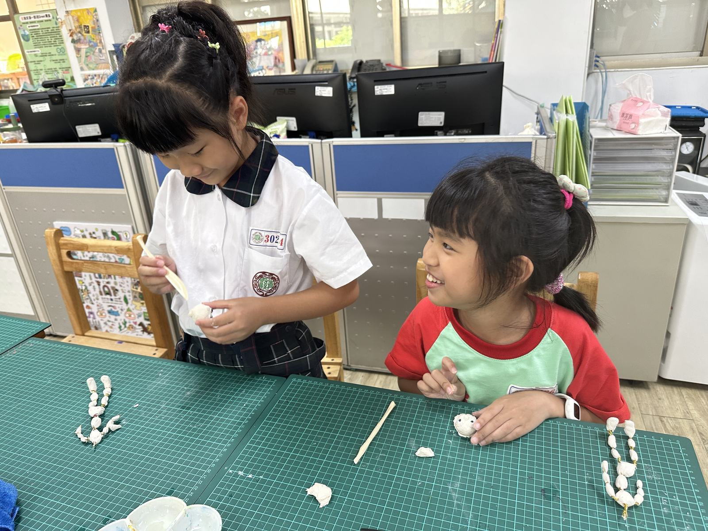
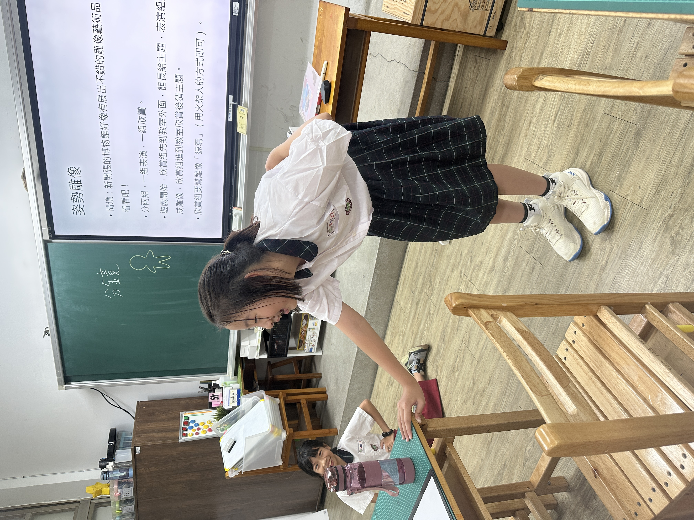
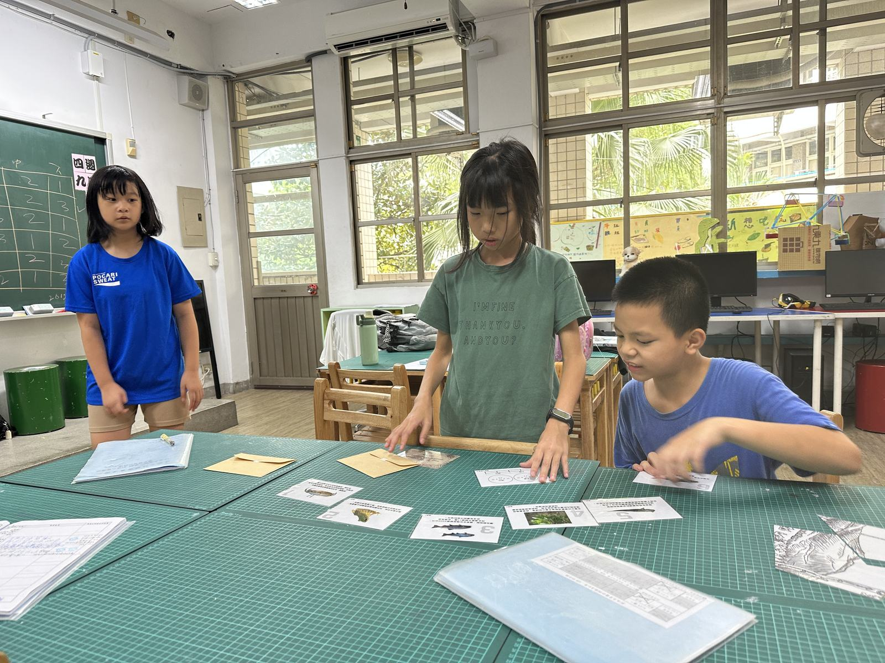

課程成果
整理人文創藝、科學數位、生活智慧等課程中的作品與學習歷程。
Qing Xi Elementary School
青溪國小創造力資優班Highlights
整理人文創藝、科學數位、生活智慧等課程中的作品與學習歷程。
呈現學生從提問、研究到成果展示的完整探究歷程與學習表現。
收錄學生研究發表、專題成果與歷程紀錄，展現個別化學習深度。
包含迎新活動、交流參訪、成果展與各項校內外延伸學習經驗。
活動照片
從結構組裝、媒材應用到動畫製作，孩子在動手實作中建立創意與表達能力。




透過技能課、人偶製作與議題課程，培養學生整合想法、合作創作與主題表達能力。




成果展示
這個頁面可持續放入本學年度活動照片、學生作品、成果發表與重要學習紀錄， 完整呈現班級的學習樣貌與特色。
作品展示
可分類呈現學生作品、主題成果與課程照片。
活動紀錄
可集中整理重要活動紀錄，讓成果更有系統地展示。
師生互動

畢業成果展